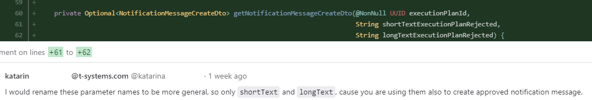
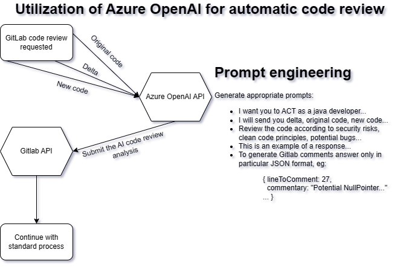

GPT models hype
Created by Cyril Sadovsky and Michal Kovacik TODO: linka apku TODO: Fotky
The transformer architecture is a type of neural network architecture that was introduced in 2017 by Google. for natural language processing tasks such as machine translation. It is based on the self-attention mechanism, which allows the model to weigh the importance of different parts of the input sequence when computing the representation of each element in the sequence.
2017 - Google described the concept of transformers - 65 million parameters
2018 - GPT-1 - 110 million parameters
2019 - GPT-2 - 1.5B parameters
2020 - GPT-3 - 175B parameters
2023 - GPT-4 - 1T parameters ??? - not confirmed information
"Successfully transitioning to a world with superintelligence is perhaps the most important(and hopeful, and scary)project in human history. Success is far from guaranteed, and the stakes (boundless downside and boundless upside) will hopefully unite all of us." Sam Altman - OpenAI CEO
"Artificial intelligence (AI) is becoming increasingly important, but scepticism is also spreading: People are not sure whether they should trust companies and their AI products or not. Deutsche Telekom has a responsibility to promote the development of an ethical framework for intelligent technologies. These must follow predefined ethical rules." Deutsche Telekom
GPT standerdized test results

Where we see potential?
- Enable developers to focus on more complex tasks and improve their productivity by offering quick solutions and reducing time spent on research
- Code review, Marge request
- Scripting and automation of repetitive tasks
- Documentation, comments
- Brainstorming - Board of Timotheus Höttges
- Boosting of creativity YAM Hack Kosice post
- Business analysis
Hands-on showcase in "small" - ChatGPT & Copilot
Ilya Sutskever
“When we train a large neural network, we are learning a world model. It looks like we are just learning statistical correlations in text but it turns out that to just learn the statistical correlations is to compress it really well. What the neural network learns is some representation of the process that produced the text. This text is actually a projection of the world [...] and so what the neural network is learning is more and more aspects of the world, of people [...] their hopes, dreams, and motivations, their interactions and situations. The neural network learns a compressed, abstract, usable representation of that [...] from accurately predicting the next word.”
Learn basics
Lesson learned: We need to learn the AI language, exactly the same as we learned the programming language.
Code Review Story
Lesson learned: Increase quality by third pair of eyes

Code Review Story
Code Review Story
Copilot examples
Analog wathch under 30 secons - HTML,CSS and JavaScript
Get all projects from GitLab - Python
Display data from json on HTML page with Python and Flask
Turn me into console - Cocreation mode
Story of a rainy Sunday, where the lines between human and AI blurred.
Lesson learned: Gowernance... Stronger set of code review process and testing phase (unit test, integration test, e2e test)
| Benefits | Threats |
|---|---|
| Increased productivity | Over-reliance |
| Increased quality | Incomplete understanding |
| Increased creativity | Lack of transparency (security risks, data privacy) |
| Increased efficiency | Lack of control (We are not able to influence usage of models) |
Think "big"
Why?
We do not have one view. But we know that we want to be a part of the future.
That includs increasing our productivity, quality and creativity therefore we bring bigger value to our customers.
OK, OK, it seems like really good corparate bullshit bingo, but we (Cyril and Michal) are doing it for be actual and relevat and stay competent for next years.
How?
We as an Deutsche Telekom are in cooperation with Microsoft.
- Speed Max: Copilot for Developers
- Speed High: Playground for AI (with GPT models - GDPR complient)
- Speed Normal: GPT model for products
What?
AI reviewer for Developers
What?
AI assitent for Developers
What?
- Pilot for Playgroung and Copilot - Control group vs Others
- We are also looking for new ideas for increasing development process efficiency or product improvement (or new products). Utilizing Vector Databases (like Pinecone) for protecting data privacy - Link.